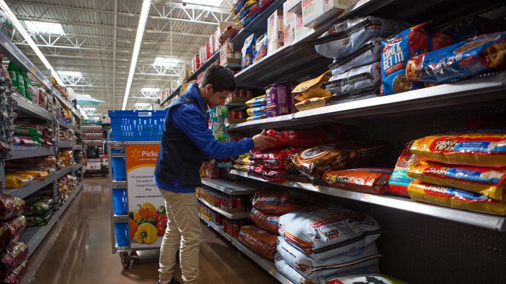

Services

Grocery Store Pick Up
A service that allows food donors to pick up groceries from participating stores and have them delivered to a designated food donation center.

Food Bank Delivery
A service that sends food donations directly from food banks to designated donation centers.

Meal Kit Delivery
A service that sends pre packaged meal kits to designated donation centers for distribution to food insecure individuals.